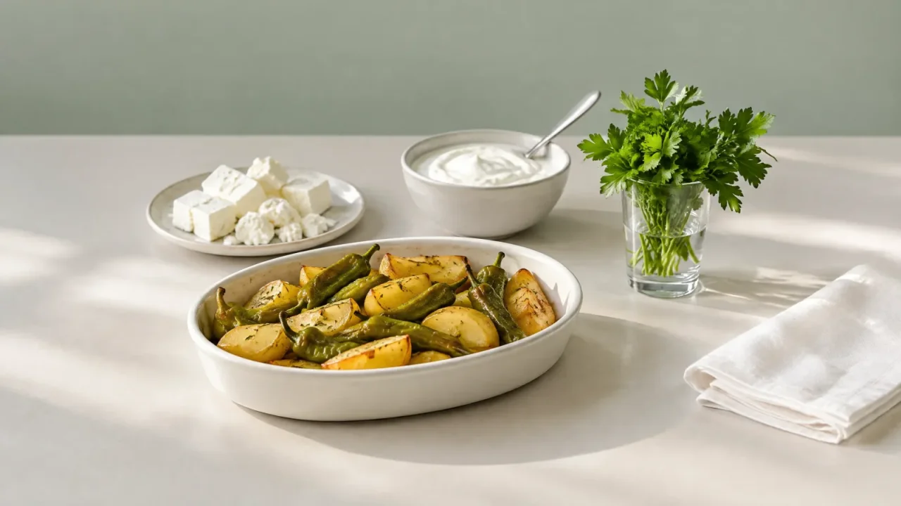
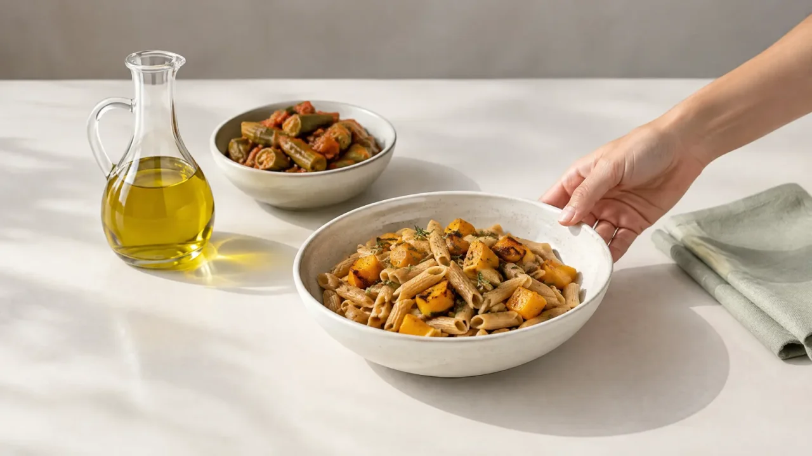

Akdeniz Tipi Beslenme
Zeytinyağı, sebze, balık ve baklagil ağırlıklı; kalbe dost dengeli haftalık menü.
- 35
- Öğün
- Orta
- Zorluk
7 Günlük Öğün Dökümü
Gün gün kahvaltı, ara öğün, öğle, ikindi ve akşam yemeği için genel öneriler. Öğle ve akşamda bir alternatif var. Örnek niteliğindedir, uyarlanabilir.
Kalan günler için ücretsiz üye ol. Programın 1. günü herkese açık; 2. günden sonrasını üye olunca görür, öğünlerini işaretleyerek takip edersin.
Kalan günler için ücretsiz üye ol. Programın 1. günü herkese açık; 2. günden sonrasını üye olunca görür, öğünlerini işaretleyerek takip edersin.
Kalan günler için ücretsiz üye ol. Programın 1. günü herkese açık; 2. günden sonrasını üye olunca görür, öğünlerini işaretleyerek takip edersin.
Kalan günler için ücretsiz üye ol. Programın 1. günü herkese açık; 2. günden sonrasını üye olunca görür, öğünlerini işaretleyerek takip edersin.
Kalan günler için ücretsiz üye ol. Programın 1. günü herkese açık; 2. günden sonrasını üye olunca görür, öğünlerini işaretleyerek takip edersin.
Kalan günler için ücretsiz üye ol. Programın 1. günü herkese açık; 2. günden sonrasını üye olunca görür, öğünlerini işaretleyerek takip edersin.
Programın Alışveriş Listesi
Menüdeki yemeklerin ana malzemeleri, reyon reyon.
Alışveriş Listesi
1. günün ana malzemeleri. Bütün haftanın listesi üyelere açık.
7 günün ana malzemeleri ve kaç günde geçtikleri.
Sebze ve Meyve 11
- Domates
- Elma
- Kuru soğan
- Limon
- Marul
- Maydanoz
- Patlıcan
- Salatalık
- Sarımsak
- Taze fasulye
- Yeşil biber
Balık, Et ve Yumurta 2
- Çipura
- Yumurta
Süt Ürünleri 1
- Yoğurt
Tahıl ve Baklagil 2
- Pilavlık bulgur
- Tam buğday ekmeği
Kuruyemiş ve Kuru Meyve 1
- Badem
Yağ, Zeytin ve Diğer 1
- Zeytinyağı
Sebze ve Meyve 28
- Armut1 gün
- Bezelye1 gün
- Brokoli1 gün
- Domates6 gün
- Elma1 gün
- Enginar1 gün
- Greyfurt1 gün
- Havuç4 gün
- Kabak3 gün
- Kırmızı biber1 gün
- Kuru soğan5 gün
- Limon6 gün
- Marul4 gün
- Maydanoz4 gün
- Mevsim meyvesi1 gün
- Muz1 gün
- Nar1 gün
- Patlıcan2 gün
- Pırasa1 gün
- Portakal1 gün
- Roka2 gün
- Salatalık5 gün
- Sarımsak1 gün
- Taze fasulye1 gün
- Taze soğan2 gün
- Üzüm1 gün
- Yeşil biber3 gün
- Yeşil elma1 gün
Balık, Et ve Yumurta 7
- Çipura1 gün
- Dana kıyma1 gün
- Hamsi1 gün
- Levrek1 gün
- Somon1 gün
- Tavuk göğsü1 gün
- Yumurta4 gün
Süt Ürünleri 5
- Ayran1 gün
- Beyaz peynir3 gün
- Kaşar peyniri1 gün
- Süt1 gün
- Yoğurt5 gün
Tahıl ve Baklagil 11
- Barbunya1 gün
- Granola1 gün
- İnce bulgur3 gün
- Kırmızı mercimek3 gün
- Nohut2 gün
- Pilavlık bulgur5 gün
- Pirinç3 gün
- Simit1 gün
- Tam buğday ekmeği3 gün
- Tam buğday lavaş1 gün
- Yulaf ezmesi1 gün
Kuruyemiş ve Kuru Meyve 5
- Badem2 gün
- Ceviz3 gün
- Fındık1 gün
- Kuru kayısı2 gün
- Kuru üzüm1 gün
Yağ, Zeytin ve Diğer 3
- Tahin1 gün
- Zeytin3 gün
- Zeytinyağı7 gün
Menüdeki yemeklerin ana malzemeleridir, tarif ölçüsü değildir. Miktarı kişi sayına ve porsiyonuna göre belirle.
Bu Program Kimler İçin?
Genel bilgi; kişisel durumun için bir diyetisyene ve hekimine danış.
Kimler İçin Uygun?
Genel bilgi- Sebze, baklagil, tam tahıl ve balık ağırlıklı, sürdürülebilir bir düzen kurmak isteyen sağlıklı yetişkinler
- Hazır ve işlenmiş gıdayı azaltıp ev yemeğine dönmek isteyenler
- Haftada birkaç kez balık ve zeytinyağlı sebze yemeği tüketmeye açık olanlar
Başlamadan Önce Danış
Genel bilgi- Gebe ve emziren kadınlar, çocuklar ve ergenler: enerji ve besin ihtiyacı farklıdır, uzmanla uyarlanmalı
- Kronik hastalığı olan ya da düzenli ilaç kullananlar: hekimle konuşmadan başlanmamalı
- Balık, yumurta, süt ve süt ürünleri, gluten içeren tahıllar (bulgur, ekmek, simit), sert kabuklu yemişler (badem, ceviz, fındık) ve susam (humus) alerjisi ya da duyarlılığı olanlar: menüde bu besinler var
- Menüdeki enerji aralığı (~1.500–1.700 kcal) genel bir örnektir; kişisel ihtiyacın farklı olabilir
Program Künyesi
- Hazırlayan uzman
- Bekliyor
- İnceleyen uzman
- Bekliyor
- Menü kaynağı
- dadadiet.com yayındaki program sayfası
- Son güncelleme
- 06.11.2026
Öğün alternatifleri ve alışveriş listesi prototipte menüden türetildi; uzman onayı bekliyor.
 Dengeli Beslenme 7 günlük
Dengeli Beslenme 7 günlükSeyahat Haftası
Mutfağı olmayan bir hafta için otel, lokanta ve çantada taşınan basit öğünlerden kurulu plan.

Dengeli Beslenme 7 günlükAkdeniz Tipi Aile Sofrası
Zeytinyağlı sebze yemekleri, kuru baklagil ve haftada dört akşam balıkla kurulmuş, bir yetişkinin porsiyonuyla yazılmış yedi günlük aile menüsü.
 Dengeli Beslenme 28 günlük
Dengeli Beslenme 28 günlükAkdeniz Tipi Dört Hafta
Zeytinyağı temel yağ; sebze, kuru baklagil, tam tahıl ve haftada dört gün balıkla kurulmuş, kırmızı eti haftada bir güne indiren dört haftalık menü.

Dengeli Beslenme 14 günlükAkdeniz Tipi Evden Çalışma: İki Hafta
Zeytinyağı temel yağ; kuru baklagil, tam tahıl, sebze ve haftada dört akşam balıkla kurulmuş, evden çalışan biri için iki haftalık menü.

Diyetisyen Elif

- Kilo Yönetimi · Sporcu Beslenmesi
- İstanbul · Online ve yüz yüze
Diyetisyen Mert
- Kilo Yönetimi · Sporcu Beslenmesi
- Ankara · Online
Diyetisyen Selin
- Gebelik & Emzirme · Geriatri Beslenmesi
- İzmir · Online ve yüz yüze
Diyetisyen Kerem
- Kilo Yönetimi
- İzmir · Online
Diyetisyen Deniz
- Hormonal Denge & PCOS · Kilo Yönetimi
- İstanbul · Online ve yüz yüze
sponsorluğundaSponsorlu · prototip örneğiKapılara dokunarak diyetisyenleri incele
Bu sayfadaki içerik genel bilgilendirme amaçlıdır; tıbbi teşhis veya tedavi yerine geçmez. Kişiye özel beslenme planı yalnızca yetkili bir diyetisyen tarafından hazırlanır. Gebelik, kronik hastalık, düzenli ilaç kullanımı, çocuk beslenmesi veya klinik bir durum varsa plana başlamadan önce hekim ve diyetisyen kontrolü zorunludur.